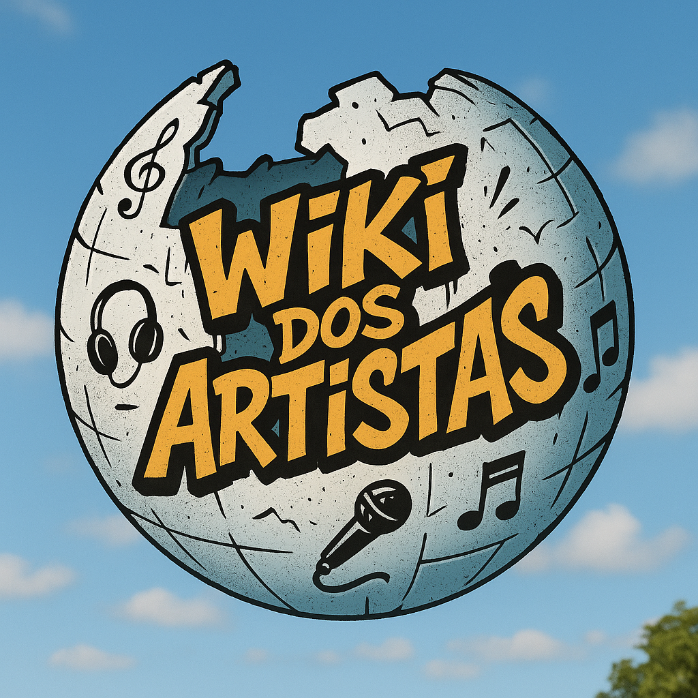

Bem-vindo à Wiki dos Artistas
Use o campo de busca acima para acessar a página de um dos artistas.
🎤 Artista em destaque do dia
Negra Li: Uma das vozes mais marcantes do R&B e hip hop brasileiro. Com sua trajetória iniciada nos anos 90, ela abriu portas para muitas mulheres na música urbana nacional.
💡 Você sabia?
O Racionais MC's foram pioneiros ao trazer temas como racismo e desigualdade para o centro do debate social usando o rap como ferramenta de resistência.